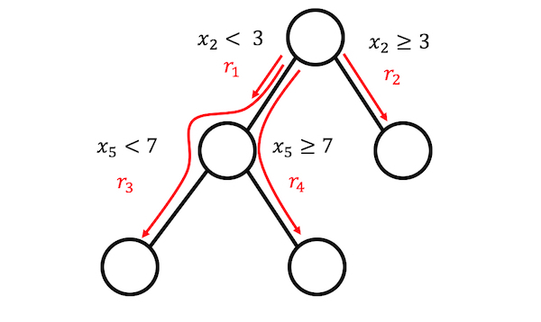

5.6 - Ajustement des règles
L’algorithme RuleFit de Friedman et Popescu (2008)1 apprend des modèles linéaires clairsemés qui incluent des effets d’interaction automatiquement détectés sous la forme de règles de décision.
Le modèle de régression linéaire ne tient pas compte des interactions entre les caractéristiques. Ne serait-il pas pratique d’avoir un modèle aussi simple et interprétable que les modèles linéaires, mais intégrant également des interactions de fonctionnalités ? RuleFit comble cette lacune. RuleFit apprend un modèle linéaire clairsemé avec les fonctionnalités d’origine ainsi qu’un certain nombre de nouvelles fonctionnalités qui sont des règles de décision. Ces nouvelles fonctionnalités capturent les interactions entre les fonctionnalités d’origine. RuleFit génère automatiquement ces fonctionnalités à partir d’arbres de décision. Chaque chemin à travers un arbre peut être transformé en règle de décision en combinant les décisions fractionnées en une règle. Les prédictions de nœuds sont ignorées et seules les divisions sont utilisées dans les règles de décision :

D’où viennent ces arbres de décision ? Les arbres sont dressés pour prédire le résultat qui nous intéresse. Cela garantit que les divisions sont significatives pour la tâche de prédiction. Tout algorithme générant de nombreux arbres peut être utilisé pour RuleFit, par exemple une forêt aléatoire. Chaque arbre est décomposé en règles de décision qui sont utilisées comme fonctionnalités supplémentaires dans un modèle de régression linéaire clairsemé (Lasso).
L’article RuleFit utilise les données sur le logement de Boston pour illustrer ceci : l’objectif est de prédire la valeur médiane des maisons d’un quartier de Boston. L’une des règles générées par RuleFit est : IF number of rooms > 6.64 ET concentration of nitric oxide < 0.67 ALORS 1 SINON 0.
RuleFit est également livré avec une mesure de l’importance des fonctionnalités qui permet d’identifier les termes linéaires et les règles importants pour les prédictions. L’importance des caractéristiques est calculée à partir des poids du modèle de régression. La mesure d’importance peut être agrégée pour les caractéristiques originales (qui sont utilisées sous leur forme « brute » et éventuellement dans de nombreuses règles de décision).
RuleFit introduit également des tracés de dépendance partielle pour montrer le changement moyen de la prédiction en modifiant une fonctionnalité. Le tracé de dépendance partielle est une méthode indépendante du modèle qui peut être utilisée avec n’importe quel modèle et est expliquée dans le chapitre du livre sur les tracés de dépendance partielle.
5.6.1 - Interprétation et exemple
Puisque RuleFit estime finalement un modèle linéaire, l’interprétation est la même que pour les modèles linéaires « normaux » . La seule différence est que le modèle possède de nouvelles fonctionnalités dérivées des règles de décision. Les règles de décision sont des caractéristiques binaires : une valeur de 1 signifie que toutes les conditions de la règle sont remplies, sinon la valeur est 0. Pour les termes linéaires dans RuleFit, l’interprétation est la même que dans les modèles de régression linéaire : si la caractéristique augmente d’une unité , le résultat prédit change en fonction du poids des caractéristiques correspondant.
Dans cet exemple, nous utilisons RuleFit pour prédire le nombre de vélos loués un jour donné. Le tableau présente cinq des règles générées par RuleFit, ainsi que leurs poids et importances Lasso. Le calcul est expliqué plus loin dans le chapitre.
La règle la plus importante était : « jours_depuis_2011 > 111 & temps de repos (« GOOD », « MISTY ») » et le poids correspondant est 795. L’interprétation est : Si jours_depuis_2011 > 111 & temps de repos (« GOOD », « MISTY ») , le nombre prévu de vélos augmente de 795, lorsque toutes les autres valeurs de caractéristiques restent fixes. Au total, 278 règles de ce type ont été créées à partir des 8 fonctionnalités originales. Beaucoup! Mais grâce au Lasso, seuls 59 des 278 ont un poids différent de 0.
Le calcul de l’importance des caractéristiques globales révèle que la tendance de la température et du temps sont les caractéristiques les plus importantes :
La mesure de l’importance de la fonctionnalité inclut l’importance du terme brut de la fonctionnalité et toutes les règles de décision dans lesquelles la fonctionnalité apparaît.
Modèle d’interprétation
L’interprétation est analogue aux modèles linéaires : le résultat prévu change de \(\beta_j\) si la fonctionnalité \(x_j\) change d’une unité, à condition que toutes les autres caractéristiques restent inchangées. L’interprétation pondérée d’une règle de décision est un cas particulier : si toutes les conditions d’une règle de décision \(r_k\) s’appliquent, le résultat prévu change de \(\alpha_k\) (le poids appris de la règle \(r_k\) dans le modèle linéaire).
Pour la classification (en utilisant la régression logistique au lieu de la régression linéaire) : Si toutes les conditions de la règle de décision \(r_k\) s’appliquent, les chances d’un événement ou d’un non-événement changent d’un facteur de \(\alpha_k\).
5.6.2 - Théorie
Examinons plus en détail les détails techniques de l’algorithme RuleFit. RuleFit se compose de deux composants : le premier composant crée des « règles » à partir d’arbres de décision et le deuxième composant ajuste un modèle linéaire avec les fonctionnalités d’origine et les nouvelles règles en entrée (d’où le nom « RuleFit »).
Étape 1 : Génération de règles
A quoi ressemble une règle ? Les règles générées par l’algorithme ont une forme simple. Par exemple : SI x2 < 3 ET x5 < 7 ALORS 1 ELSE 0. Les règles sont construites en décomposant des arbres de décision : Tout chemin vers un nœud dans un arbre peut être converti en règle de décision. Les arbres utilisés pour les règles sont ajustés pour prédire le résultat cible. Par conséquent, les divisions et les règles qui en résultent sont optimisées pour prédire le résultat qui vous intéresse. Vous enchaînez simplement les décisions binaires qui mènent à un certain nœud avec « ET », et voilà, vous avez une règle. Il est souhaitable de générer un grand nombre de règles diverses et significatives. L’augmentation de gradient est utilisée pour ajuster un ensemble d’arbres de décision en régressant ou en classant y avec vos fonctionnalités d’origine X. Chaque arbre résultant est converti en plusieurs règles. Non seulement les arbres améliorés, mais n’importe quel algorithme d’ensemble d’arbres peut être utilisé pour générer les arbres pour RuleFit. Un ensemble d’arbres peut être décrit avec cette formule générale :
\[\hat{f}(x) = a_0+\sum_{m=1}^M a_m \hat{f}_m(X)\]
M est le nombre d’arbres et \(\hat{f}_m(x)\) est la fonction de prédiction du m-ième arbre. Les \(a\) sont les poids. Les ensembles en sac, la forêt aléatoire, AdaBoost et MART produisent des ensembles d’arbres et peuvent être utilisés pour RuleFit.
Nous créons les règles à partir de tous les arbres de l’ensemble. Chaque règle \(r_m\) prend la forme de :
\[r_m(x) = \prod_{j\in\text{T}_m}I(x_j\in{}s_{jm})\]
où \(\text{T}_{m}\) est l’ensemble des fonctionnalités utilisées dans le m-ème arbre, I est la fonction indicatrice qui vaut \(1\) lorsque la fonctionnalité \(x_j\) est dans le sous-ensemble spécifié de valeurs \(s\) pour la \(j^{ème}\) fonctionnalité (comme spécifié par les divisions d’arbre) et \(0\) sinon. Pour les fonctionnalités numériques, \(s_{jm}\) est un intervalle dans la plage de valeurs de la fonctionnalité. L’intervalle ressemble à l’un des deux cas :
\[x_{s_{jm},\text{lower}}<x_j\]
\[x_j<x_{s_{jm},upper}\]
Des divisions supplémentaires dans cette fonctionnalité pourraient conduire à des intervalles plus compliqués. Pour les fonctionnalités catégorielles, le sous-ensemble s contient certaines catégories spécifiques de la fonctionnalité.
Un exemple inventé pour l’ensemble de données de location de vélos :
\[\begin{align*} r_{17}(x) & = I(x_{\text{temp}}<15) . I(x_{\text{weather}} \in \{\text{good},\text{cloudy}\}) \\ & . I(10\leq x_{\text{windspeed}}<20) \end{align*}\]
Cette règle renvoie 1 si les trois conditions sont remplies, sinon 0. RuleFit extrait toutes les règles possibles d’un arbre, pas seulement des nœuds feuilles. Ainsi, une autre règle qui serait créée est :
\[r_{18}(x) = I(x_{\text{temp}}<15) . I(x_{\text{weather}} \in \{\text{good},\text{cloudy}\})\]
Au total, le nombre de règles créées à partir d’un ensemble de M arbres avec \(t_m\) les noeuds terminaux sont chacun :
\[K = \sum_{m=1}^M2(t_m-1)\]
Une astuce introduite par les auteurs de RuleFit consiste à apprendre des arbres avec une profondeur aléatoire afin de générer de nombreuses règles diverses de longueurs différentes. Notez que nous supprimons la valeur prédite dans chaque nœud et ne conservons que les conditions qui nous conduisent à un nœud, puis nous créons une règle à partir de celui-ci. La pondération des règles de décision se fait à l’étape 2 de RuleFit.
Une autre façon de voir l’étape 1 : RuleFit génère un nouvel ensemble de fonctionnalités à partir de vos fonctionnalités d’origine. Ces fonctionnalités sont binaires et peuvent représenter des interactions assez complexes de vos fonctionnalités d’origine. Les règles sont choisies pour maximiser la tâche de prédiction. Les règles sont automatiquement générées à partir de la matrice de covariables X. Vous pouvez simplement voir les règles comme de nouvelles fonctionnalités basées sur vos fonctionnalités d’origine.
Étape 2 : Modèle linéaire clairsemé
Vous obtenez BEAUCOUP de règles à l’étape 1. Étant donné que la première étape peut être considérée comme uniquement une transformation de caractéristiques, vous n’avez toujours pas fini d’ajuster un modèle. Vous souhaitez également réduire le nombre de règles. En plus des règles, toutes vos caractéristiques « brutes » de votre ensemble de données d’origine seront également utilisées dans le modèle linéaire clairsemé. Chaque règle et chaque fonctionnalité originale devient une fonctionnalité dans le modèle linéaire et obtient une estimation de poids. Les caractéristiques brutes d’origine sont ajoutées car les arbres ne parviennent pas à représenter des relations linéaires simples entre \(y\) et \(x\). Avant de former un modèle linéaire clairsemé, nous winsorisons les fonctionnalités d’origine afin qu’elles soient plus robustes face aux valeurs aberrantes :
\[l_j^*(x_j)=min(\delta_j^+,max(\delta_j^-,x_j))\]
où \(\delta_j^-\) et \(\delta_j^+\) sont les \(\delta\) quantiles de la distribution des données de l’entité \(x_j\). Un choix de 0,05 pour \(\delta\) signifie que toute valeur de fonctionnalité \(x_j\) qui se situe dans les \(5\%\) les plus basses ou les \(5\%\) les plus élevées seront définies sur les quantiles à \(5\%\) ou \(95\%\) respectivement. En règle générale, vous pouvez choisir \(\delta = 0,025\). De plus, les termes linéaires doivent être normalisés afin qu’ils aient la même importance préalable qu’une règle de décision typique :
\[l_j(x_j)= 0,4 . l^*_j(x_j) / std(l^*_j(x_j))\]
Le \(0,4\) est l’écart type moyen des règles avec une distribution de support uniforme de \(s_k\sim{}U(0,1)\)
Nous combinons les deux types de fonctionnalités pour générer une nouvelle matrice de fonctionnalités et former un modèle linéaire clairsemé avec Lasso, avec la structure suivante :
\[\hat{f}(x)=\hat{\beta}_0+\sum_{k=1}^K\hat{\alpha}_k{}r_k(x)+\sum_{j=1}^p\hat{\beta}_j{}l_j(x_j)\]
où \(\hat{\alpha}\) est le vecteur de poids estimé pour les caractéristiques de la règle et \(\hat{\beta}\) le vecteur de poids pour les caractéristiques d’origine. Puisque RuleFit utilise Lasso, la fonction de perte obtient la contrainte supplémentaire qui force certains poids à obtenir une estimation nulle :
\[\begin{align*} (\{\hat{\alpha}\}_1^K,\{\hat{\beta}\}_0^p) & = & argmin_{\{\hat{\alpha}\}_1^K,\{\hat{\beta}\}_0^p}\sum_{i=1}^n L(y^{(i)},f(x^{(i)})) \\ & + & \lambda.\left(\sum_{k=1}^K|\alpha_k| + \sum_{j=1}^p|\beta_j|\right) \end{align*}\]
Le résultat est un modèle linéaire qui a des effets linéaires pour toutes les fonctionnalités d’origine et pour les règles. L’interprétation est la même que pour les modèles linéaires, la seule différence est que certaines fonctionnalités sont désormais des règles binaires.
Step 3 (optional): Feature importance
Pour les termes linéaires des caractéristiques d’origine, l’importance des caractéristiques est mesurée avec le prédicteur standardisé :
\[I_j=|\hat{\beta}_j|. std(l_j(x_j))\]
où \(\beta_j\) est le poids du modèle Lasso et \(std(l_j(x_j))\) est l’écart type du terme linéaire sur les données.
Pour les termes de la règle de décision, l’importance est calculée avec la formule suivante :
\[I_k=|\hat{\alpha}_k|.\sqrt{s_k(1-s_k)}\]
où \(\hat{\alpha}_k\) est le poids Lasso associé de la règle de décision et \(s_k\) est la prise en charge de la fonctionnalité dans les données, qui est le pourcentage de points de données auxquels la règle de décision s’applique (où \(r_k(x)=1\)) :
\[s_k=\frac{1}{n}\sum_{i=1}^n r_k(x^{(i)})\]
Une caractéristique apparaît sous la forme d’un terme linéaire et éventuellement également dans de nombreuses règles de décision. Comment mesurons-nous l’importance totale d’une fonctionnalité ? L’importance \(J_j(x)\) d’une caractéristique peut être mesurée pour chaque prédiction individuelle :
\[J_j(x)=I_j(x)+\sum_{x_j\in{}r_k}I_k(x)/m_k\]
où \(I_l\) est l’importance du terme linéaire et \(I_k\) l’importance des règles de décision dans lesquelles \(x_j\) apparaît, et \(m_k\) est le nombre de caractéristiques constituant la règle \(r_k\). L’ajout de l’importance des fonctionnalités de toutes les instances nous donne l’importance globale des fonctionnalités :
\[J_j(X)=\sum_{i=1}^n{}J_j(x^{(i)})\]
Il est possible de sélectionner un sous-ensemble d’instances et de calculer l’importance des fonctionnalités pour ce groupe.
5.6.3 - Avantages
RuleFit ajoute automatiquement des interactions de fonctionnalités aux modèles linéaires. Par conséquent, cela résout le problème des modèles linéaires dans lesquels vous devez ajouter manuellement des termes d’interaction et cela aide un peu à résoudre le problème de la modélisation des relations non linéaires.
RuleFit peut gérer à la fois les tâches de classification et de régression.
Les règles créées sont faciles à interpréter, car ce sont des règles de décision binaires. Soit la règle s’applique à une instance, soit non. Une bonne interprétabilité n’est garantie que si le nombre de conditions au sein d’une règle n’est pas trop grand. Une règle avec 1 à 3 conditions me semble raisonnable. Cela signifie une profondeur maximale de 3 pour les arbres de l’ensemble d’arbres.
Même s’il existe de nombreuses règles dans le modèle, elles ne s’appliquent pas à toutes les instances. Pour une instance individuelle, seule une poignée de règles s’appliquent (= avoir un poids non nul). Cela améliore l’interprétabilité locale.
RuleFit propose un tas d’outils de diagnostic utiles. Ces outils sont indépendants du modèle, vous pouvez donc les trouver dans la section indépendante du modèle du livre : importance des fonctionnalités, diagrammes de dépendance partielle et interactions des fonctionnalités.
5.6.4 - Inconvénients
Parfois, RuleFit crée de nombreuses règles qui ont un poids non nul dans le modèle Lasso. L’interprétabilité se dégrade avec l’augmentation du nombre de fonctionnalités dans le modèle. Une solution prometteuse consiste à forcer les effets de caractéristiques à être monotones, ce qui signifie qu’une augmentation d’une caractéristique doit conduire à une augmentation de la prédiction.
Un inconvénient anecdotique : les journaux revendiquent de bonnes performances de RuleFit – souvent proches des performances prédictives des forêts aléatoires ! – mais dans les rares cas où je l’ai essayé personnellement, les performances ont été décevantes. Essayez-le simplement pour votre problème et voyez comment il fonctionne.
Le produit final de la procédure RuleFit est un modèle linéaire doté de fonctionnalités supplémentaires (les règles de décision). Mais comme il s’agit d’un modèle linéaire, l’interprétation du poids reste peu intuitive. Il est livré avec la même « note de bas de page » qu’un modèle de régression linéaire habituel : « … étant donné que toutes les caractéristiques sont fixes. » Cela devient un peu plus délicat lorsque les règles se chevauchent. Par exemple, une règle de décision (fonctionnalité) pour la prévision du vélo pourrait être : « température > 10 » et une autre règle pourrait être « température > 15 & météo=‘GOOD’ ». S’il fait beau et que la température est supérieure à 15 degrés, la température est automatiquement supérieure à 10. Dans les cas où la deuxième règle s’applique, la première règle s’applique également. L’interprétation du poids estimé pour la deuxième règle est la suivante : « En supposant que toutes les autres caractéristiques restent fixes, le nombre prévu de vélos augmente de \(\beta_2\) quand il fait beau et que la température est supérieure à 15 degrés. Mais maintenant, il devient très clair que « toutes les autres caractéristiques sont corrigées » est problématique, car si la règle 2 s’applique, la règle 1 s’applique également et l’interprétation est absurde.
5.6.5 - Logiciels et alternatives
L’algorithme RuleFit est implémenté dans R par Fokkema et Christoffersen (2017)2 et vous pouvez trouver une version Python sur GitHub.
Un framework très similaire est skope-rules, un module Python qui extrait également les règles des ensembles. Il diffère dans la manière dont il apprend les règles finales : premièrement, les règles skope suppriment les règles peu performantes, sur la base de seuils de rappel et de précision. Ensuite, les règles en double et similaires sont supprimées en effectuant une sélection basée sur la diversité des termes logiques (variable + opérateur plus grand/plus petit) et les performances (score F1) des règles. Cette dernière étape ne repose pas sur l’utilisation de Lasso, mais considère uniquement le score F1 sorti du sac et les termes logiques qui forment les règles.
Le package imodels contient également des implémentations d’autres ensembles de règles, tels que les ensembles de règles bayésiennes, les ensembles de règles boostés et les ensembles de règles SLIPPER en tant que package Python avec une interface scikit-learn unifiée.